Selected public projects
ARE Business Card · Amaken CEO Dashboard · Real Estate Analytics

README-safe animated SVG layout · navy / electric blue / crimson


ARE Business Card · Amaken CEO Dashboard · Real Estate Analytics
